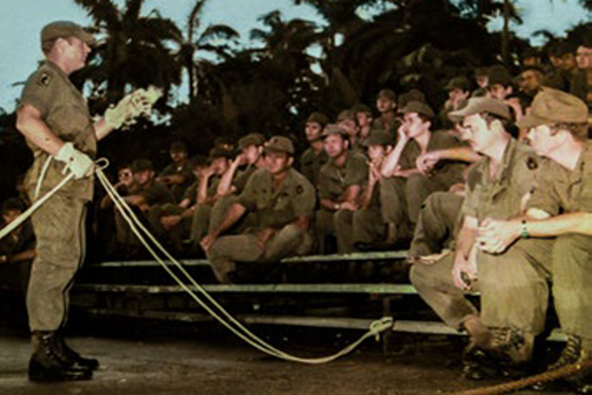
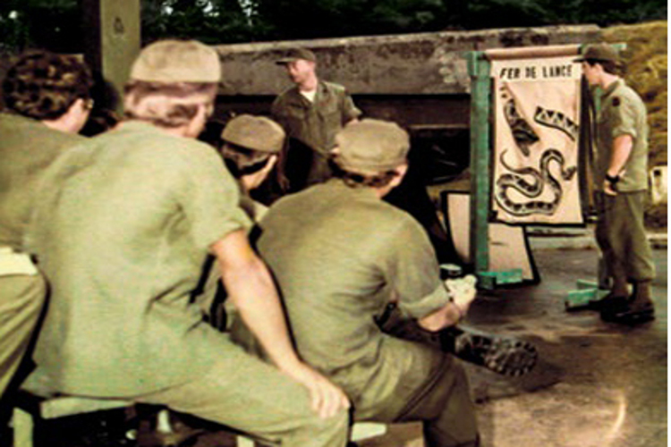

A História do Centro de Instrução de Guerra na Selva

O Centro de Instrução de Guerra na Selva (CIGS) foi criado em 2 de março de 1964, pelo Decreto N° 53.649. Seu primeiro Comandante foi o então Major de Artilharia Jorge Teixeira de Oliveira, o TEIXEIRÃO.
Somente 2 (dois) anos depois de decretada a sua criação, o CIGS começou a funcionar. Instalou-se, inicialmente, em caráter provisório, no antigo Quartel-General do Grupamento de Elementos de Fronteira (GEF), na Península de São Vicente (Manaus-AM), local onde hoje localiza-se o 9º Distrito Naval. Uma plêiade de excelentes Oficiais e Sargentos – mandados anteriormente cursar a Escola das Américas, no Forte Sherman, na Zona do Canal no Panamá (US Jungle Operations Training Center, Fort Sherman, Canal Zone), já na condição de “Jungle Expert” – constituiu-se na equipe pioneira que implantou o Centro. O 1º Curso de Guerra na Selva (CGS), como era denominado à época, destinado a Oficiais (de 2º Tenente a Coronel), foi concluído em novembro de 1966 e é conhecido como o “66/único”, pois foi o único realizado naquele ano.
Em setembro de 1967, o CIGS instalou-se definitivamente no seu atual aquartelamento, no bairro São Jorge (Manaus-AM). Os Cursos de Operações na Selva (COS), de 2 (duas) categorias, a princípio um para Oficiais e outro para Subtenentes/Sargentos, passaram, a partir de 1971, a abranger três categorias:
- Categoria "A" - Para Oficiais Superiores
- Categoria "B" - Para Capitães e Tenentes
- Categoria "C" - Para Subtenentes e Sargentos
A partir de 1994, foram incluídas mais 2 (duas) categorias de cursos: o COS “B1” (para Capitães e Tenentes) e o COS “C1” (para Subtenentes e Sargentos da Arma de Comunicações, do Quadro de Material Bélico e dos Serviços de Intendência e de Saúde, e, também, para militares das demais Forças Armadas, Forças Auxiliares e das Nações Amigas). A partir de 2000, inclusive, essas categorias de cursos deixaram de funcionar no CIGS, passando, então, os militares das especialidades referidas acima a frequentarem os COS “B” e “C”, respectivamente.
Como Centro de Instrução, o CIGS tinha uma estrutura semelhante de um Corpo de Tropa e era subordinado ao CMA (por meio do GEF, até 1º jul 1969). Com a criação do Departamento de Ensino e Pesquisa (DEP) [atual Departamento de Educação e Cultura do Exército (DECEx)], o CIGS passou a integrar esse Departamento, a partir de 17 fev 1970 (Decreto Nº 66.216, de 17 fev 1970), sem mudança de missão e/ou de organização.
Por meio do Decreto Nº 67.458, de 29 out 1970, o antigo CIGS foi transformado em Centro de Operações na Selva e Ações de Comandos (COSAC). Com nova roupagem, foi reestruturado como um Estabelecimento de Ensino e teve ampliada a sua missão, passando a formar, também, combatentes Comandos. O COSAC estava diretamente subordinado à Diretoria de Especialização e Extensão (DEE) [atual Diretoria de Educação Técnica Militar (DETMil)].
Com o Decreto Nº 81.201, de 10 jan 1978, o COSAC volta a ser denominado Centro de Instrução de Guerra na Selva (CIGS), uma vez que o Curso de Ações de Comandos passou à responsabilidade do Centro de Instrução Paraquedista General Penha Brasil (CI Pqdt GPB), no Rio de Janeiro-RJ, permanecendo subordinado diretamente à então DEE.
Ao longo de seus 60 anos de existência, o CIGS especializou 7.298 guerreiros de selva, sendo 644 de nações amigas (atualizado em 13 de junho de 2024).
Devido ao trabalho daqueles que antecederam a atual geração, este Centro tem o status e a responsabilidade de especializar o melhor combatente de selva do mundo.
CIGS: orgulho do Exército Brasileiro, patrimônio do Brasil!